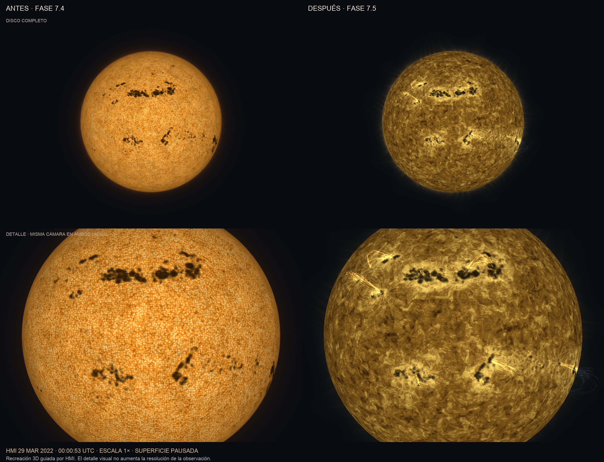

29 marzo 2022, 00:00:53 UTC · misma cámara, escala y reloj. Recreación guiada por HMI; filamentos y corona ilustrativos.
0–8 s: movimiento a 1×. 8–9 s: pausa exacta. Las imágenes originales conservan el detalle que puede perder la compresión.
